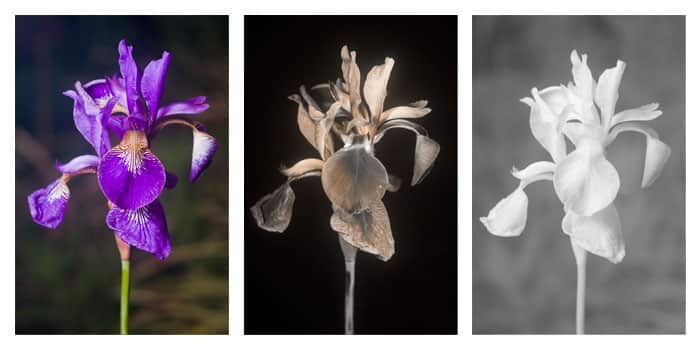

El cambio ambiental, especialmente el calentamiento global y la reducción de la capa de ozono, está alterando los colores de las flores a nivel mundial. Las flores aumentan sus pigmentos ultravioleta (UV) para protegerse de la radiación y los cambios de temperatura, lo que modifica su pigmentación visible e invisible, afectando la polinización.
- Aumento de Pigmentos UV: Las flores han aumentado sus pigmentos absorbentes de UV en promedio un anual desde 1941, funcionando como un "protector solar" contra la radiación dañina, según indica.
- Alteración de Tonos Visibles: Temperaturas más frías pueden intensificar rojos y púrpuras, mientras que el calor extremo puede desvanecer los colores o causar que las flores se vuelvan pálidas.
- Coles con filtro solar, quelites que se ponen morados, flores que cambian de color… Todo eso no son una adaptación momentánea o que esté ocurriendo en esas plantas por el Cambio Climático actual.
- Más bien es la manifestación de una adaptación de esas especies ante sucesivos cambios climáticos que ocurrieron hace millones de años y que su descendencia, al traer esa respuesta en su código genético, la expresa así hoy ante un evento climático similar pasado.
- Probablemente, sostiene el doctor Víctor L. Barradas, en un pasado remoto hubo más radiación solar, temperaturas altas, falta de agua… y las plantas que podían cambiar de color sobrevivieron ante esos eventos climáticos, “y las que no”, se extinguieron.
